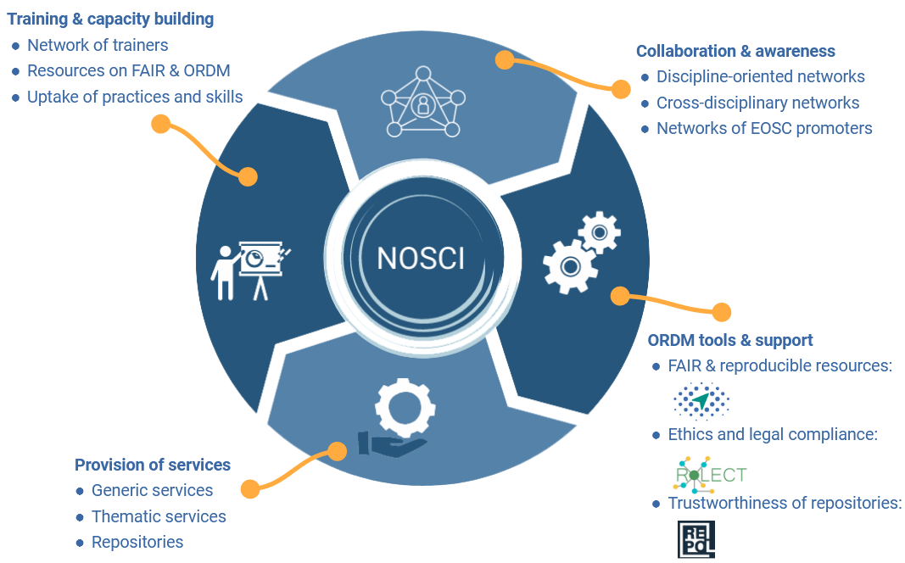

Authors:
Kalliopi Kanavou1, Biljana Kosanović2, Katerina Lenaki3, Elli Papadopoulou1, Ilias Papastamatiou4, Electra Sifacaki1, Milica Ševkušić2,5, Eleni Toli1
1 Athena Research & Innovation Centre, Athens, Greece
2 University of Belgrade Computer Centre, Belgrade, Serbia
3 Ministry of Education, Athens, Greece
4 National Infrastructures for Research and Technology – GRNET S.A., Athens, Greece
5 Institute of Technical Sciences of SASA, Belgrade, Serbia
Table of contents
The project National Initiatives for Open Science in Europe – NI4OS Europe supports the integration of national Open Science Cloud initiatives in 15 countries in Southeast Europe into the EOSC governance. By doing this, it also builds infrastructure and creates a favourable environment for open and intensive scholarly communication.
The main instrument in achieving this is the network of national Open Science Cloud Initiatives (NOSCIs) established in the partner countries as national-level coalitions of Open Science (OS) stakeholders that have a prominent role and interest in the European Open Science Cloud. The concept of NOSCI has been developed in response to the specific traits and challenges in the targeted region, based on complex and multilayered analyses of stakeholders, policies and local contexts.
1. Landscaping: Challenges in the region
The challenges are largely determined by the diversity within the region, most notably:
- NI4OS-Europe partners include both EU members and non-EU countries;
- non-EU countries are less integrated in European OS networks;
- the structure of OS stakeholders across countries varies;
- the region is marked by a significant linguistic diversity, and
- different research governance systems,
- different policy traditions, and
- varying levels of available funding.
NI4OS-Europe partner countries in Open Science networks and initiatives
NI4OS-Europe partner countries include both EU members (Bulgaria, Croatia, Cyprus, Greece, Hungary, Romania, Slovenia) and Associated Countries (Albania, Armenia, Bosnia and Herzegovina, Georgia, Moldova, Montenegro, North Macedonia, Serbia), which are not equally integrated in European Open Science initiatives. The diagram shows the representation of the NI4OS-Europe partner countries in major Open Science and EOSC-related initiatives, research infrastructures and consortia. Colour coding is used to indicate various initiatives/infrastructures/consortia.
Hover your mouse over a segment to see the percentage of the partner countries represented in a specific initiative/infrastructure/consortium. Move from the centre to the periphery of the diagram to see the percentage of countries represented in multiple initiatives/infrastructures/consortia. For example, if you hover over the third layer from the centre (red) in the right half of the diagram, you will see the percentage of the NI4OS-Europe partner countries that are not EU members but are members of OpenAIRE and GEANT, or if you hover over the small green segment in the left half of the diagram, you will see the percentage of the NI4OS-Europe partner countries that are EU members and the the same time members of OpenAIRE, GEANT, CESSDA, DARIAH and have an RDA Node.
Open Science stakeholders in the NI4OS-Europe partner countries
The diagram shows the number and structure of Open Science stakeholders in the 15 NI4OS-Europe partner countries based on the dataset collected between early July and late October 2019, as part of the NI4OS-Europe landscape study. The stakeholders are classified into five groups based on their role in the research ecosystem:
- FUND (research funders and policymakers),
- CREATE (universities, research institutes, etc.), SUPPORT (libraries, repositories, research infrastructures, etc.),
- CONSUME (organizations using research results in their work, e.g. SMEs) and
- FACILITATE (individuals and organizations involved in promoting the principles off open science).
What do stakeholders expect from EOSC?
Despite local differences, the stakeholders' expectations from EOSC are similar and are closely related to scholarly communication.
The word cloud shows the most frequent concepts mentioned in response to the question “What do you expect from EOSC?” in the NI4OS-Europe landscaping survey conducted in the autumn of 2019.
Resources
-
- Dataset: Kosanović, Biljana, Ševkušić, Milica, & Otašević, Vladimir. (2020). Open Science stakeholders in Albania, Armenia, Bosnia and Herzegovina, Bulgaria, Croatia, Cyprus, Georgia, Greece, Hungary, Moldova, Montenegro, North Macedonia, Romania, Serbia and Slovenia [Data set]. Zenodo. http://doi.org/10.5281/zenodo.3722930
- Read more: Deliveravle 2.1: Biljana Kosanović, & Milica Ševkušić. (2019). Stakeholder map, inventory, policy matrix. Zenodo. http://doi.org/10.5281/zenodo.3736129
- Stakeholder map: https://ni4os.eu/os-stakeholders-map/
- Survey results: https://ni4os.eu/survey-results/
2. Methodology: Establishing NOSCIs
The framework for NOSCI development, the so-called blueprint, was designed in full recognition of the mentioned diversities.
It relies on an agile and modular methodology to cater for the varying needs and OS levels of the region:
- Work on OSC theoretical background & policies
- Develop a NOSCI blueprint
- Indicators
- Workflows for setting up National OSC Initiative
- Operational aspects
- Provide methodological and operational support
- Structured process through the 5-steps-methodology
- Checklists for setting up and monitoring
Establishing NOSCIs through five steps
- Invite Stakeholders, build the core group
- Communicate efforts to government officials, establish collaboration for the elaboration of national OS policies
- Discuss operational aspects, draft MoU, establish governance structure
- Align with EOSC, seek for the “mandated organisation” status
- Spread the know-how, share knowledge within and outside the consortium
Examples of workflows for setting up NOSCIs
NOSCIs in the region: state-of-the-art in July 2022
Explore the interactive map to find out more about NOSCI establishment in the NI4OS-Europe partner countries. Different shapes indicate the stage of NOSCI establishment:
- square marker: NOSCI establishment in progress
- drop marker: NOSCI established
Different marker colours indicate NOSCI set-up workflows:
- red: top-down
- blue: hybrid
- green: bottom-up
Resources
-
- Eleni Toli, Elli Papadopoulou, Christos Liatas, Electra Sifakaki, Ilias Papastamatiou, & Ognjen Prnjat. (2020). NI4OS-Europe National OSC initiatives models. Zenodo. https://doi.org/10.5281/zenodo.4061801
- Eleni Toli, Elli Papadopoulou, Christos Liatas, Electra Sifakaki, Ilias Papastamatiou, & Kostas Koumantaros. (2021). NI4OS-Europe Workflows for setting up National Open Science Cloud initiatives Checklist. Zenodo. https://doi.org/10.5281/zenodo.4662573
- Eleni Toli, Elli Papadopoulou, Christos Liatas, Electra Sifakaki, Ilias Papastamatiou, & Kostas Koumantaros. (2021). NI4OS-Europe Indicators for the NOSCI's establishment checklist. Zenodo. https://doi.org/10.5281/zenodo.4646837
- Milan Kuželka, Eleni Toli, Ilias Papastimatiou, & Branko Marović. (2022). NI4OS-Europe Business models recommendations. Zenodo. https://doi.org/10.5281/zenodo.6120682
3. Impact
NI4OS-Europe understands NOSCIs as inclusive national structures that provide all-round support to scholarly communities in the country, facilitate the FAIR sharing of knowledge & resources, co-shape the capacity building process and impact the national research ecosystems.

NOSCIs support scholarly communication in four main areas:
- training and capacity building:
- collaboration and awareness rising;
- provision of services, and
- tools for Open Research Dara Management and support.
The relevance of the presented analysis lies in the fact that the approach adopted by the NI4OS-Europe team could be applied in other highly diversified environments. This is confirmed by the NI4OS-Europe use cases, which demonstrate that the mechanism underlying the concept of NOSCI, based on an open and flexible interaction between challenges, as the input, and responses, as the output, could be adapted to and implemented in different local contexts.
Resources